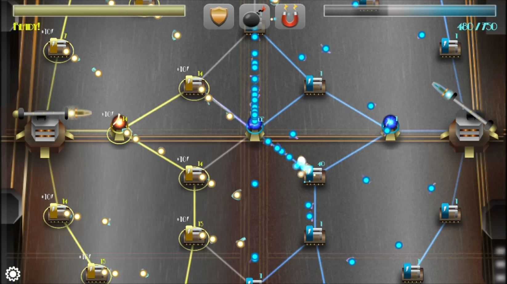

Description
Kill A Watt is a fast pace multiplayer networked game that pits two players against each other as they try to out strategize and out capture their opponent. Rather than a tower defense, it’s a tower attack. Two players take control of electricity minions to fight over power generators and shock tower control.
Kill A Watt is a game of numbers, movement, and strategy. Two players battle over strategic points in hopes of eliminating the opposing force. Players can achieve victory by taking all of their opponents towers.
Each player will start out with one or more generators located on the map. Each generator produces a certain number of units and power per second. Players use these units to take over neutral or enemy structures such as generators and towers (turrets) as well a reinforce their own structures. Units can only travel between structures. The players do not control the units once they have left the structure they were occupying. The player can only order units from structure to structure.
Generators not only produce units, but they also produce power. The power accumulated by generators is measured by a voltage meter. As power is generated the voltage meter slowly increases. Once it has reached a 100%, the game ends and the player with a voltage meter at 100% wins the game. Power can also be used to cast “powers” which use voltage. Using powers causes the voltage meter to decrease.
All structures generate 10 power every few seconds. In order to bring that power back to the death ray the towers must be linked back to the death ray. This is visualized by a glowing line that connects the towers together.
Developed By: Brandan Haertel, Gary Mixson, Erick House
Project Manager: Aaron Whiting
Art by: Erick House
Models by: Brandan Haertel
Audio by: Miah McBride
Video
Images

Links
Game Download (PC and Mac)